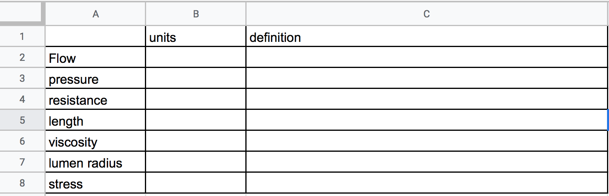
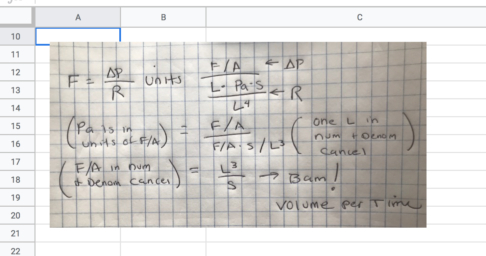

Problem Set 7 Cardiovascular
7.1 Background
This exercise explores equations 12-1 and 12-2 from Vander’s Physiology.
Regulation of blood flow is critical to increase or decrease delivery of blood to organs as they need more or less blood. Blood flow can be modeled with the equation for fluid flow used in almost any system (rivers, wind, etc)
\[\begin{equation} F = \frac{\Delta P}{R} \quad \small{(12.1)} \end{equation}\]- \(F\) is flow
- \(P\) is pressure. Here, and almost everywhere you’ll see it, \(\Delta\) (the greek letter “delta”) means “change”, so \(\Delta P\) (“delta p”) is a difference in pressure between two points in space. Here this is two points along the length of a blood vessel. It is the difference in pressure that is driving the blood to flow.
- \(R\) is the resistance to flow due to friction. Friction sucks kinetic energy from moving objects (the lost kinetic energy is transformed to heat).
Resistance is an important concept in understanding human physiology. Resistance can be modeled using the Poiseuille equation
\[\begin{equation} R = \frac{8L\eta}{\pi r^4} \quad \small{(12.2)} \end{equation}\]- \(L\) is the length of section of blood vessel
- \(\eta\) (the greek letter “eta”) is the viscosity of the fluid (or more specifically, the dynamic viscosity)
- \(r\) is the radius of the lumen of the vessel.
7.2 Problems
Create a sheet named “3. cardiovascular”
- Create a table like that below. Write down the units of each of the terms. There is no “right” answer, because units can be written different ways. For example I could write the units of volume as L (“liter”) or gallon or L\(^3\) (here “L” is length). Write down a definition of each term. Write a formal definition and then add your own interpretation of that definition. For example, Wikipedia defines density as the “mass per unit volume” which I’ll interpret as “the amount of matter in given amount of space”, which doesn’t quite capture the nuances but is helpful for understanding. Also notice that wikipedia’s definition of density here is an equation expressed as words, this can help with thinking about units.

- The typical units of viscosity, \(\mathrm{Pa}\cdot \mathrm{s}\) is not very intuitive. Wikipedia gives a nice way to think about viscosity:
Viscosity is the material property which relates the viscous stresses in a material to the rate of change of a deformation (the strain rate)
Using your knowledge of stress and strain from last semester, how would you express this in units? To answer this 1) write “Viscosity…relates the viscous stresses in a material to the rate of change of a deformation” as an equation, and then 2) determine the units from this equation. Show how the units expressed this way equals \(\mathrm{Pa}\cdot \mathrm{s}\). Do this with pencil and paper, snap a photo, and insert it below the table in your Google sheet.
Here is an example to follow: While the equation for flow is useful for understanding how variation in pressure and resistance cause variation in flow, if I use the equation to define flow, I would get something like “the change in pressure of the fluid per unit resistance”, which isn’t very helpful in thinking about flow. Flow is “the volume of fluid that moves past a point per unit time”. So how do I get from the equation to this definition? I worked this out, snapped a photo, re-sized the image to 800 pixels wide, then inserted the image in my google sheet.

- The radius of the lumen of an arteriole leading into a capilary increases 50%. What is the change in blood flow to the capillary? Use the google sheet to show your work, including all calculations.